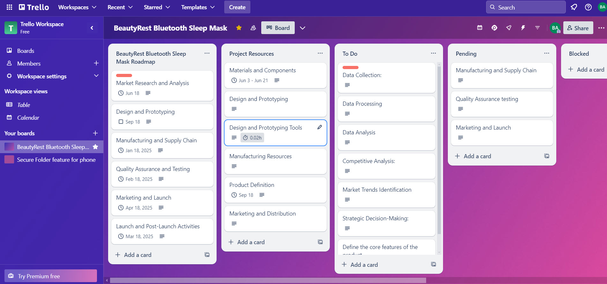
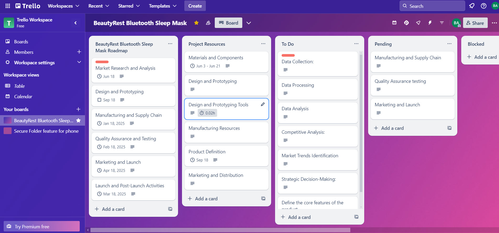

About Me
Results-driven and resourceful professional with over 5 years of progressive experience in agile methodologies, transitioning from a Business/Product Analyst to a Product Manager role. Skilled in all stages of the Software Development Life Cycle (SDLC), Product Development Life cycle (PDLC), including product and business analysis, research, requirement gathering, managing and documenting business and functional requirements.
Experienced in creating and launching new consumer goods, including coffee mugs, sleep app, Food kiosk, International money transfer app and travel accessories.
Proficient in product development, Go-To-Market, marketing analytics and strategies, including value proposition creation. Adept at effective communication with stakeholders at all levels to ensure their needs are translated into fit-for-use solutions.
Competent in facilitating events, prioritizing and organizing backlog items, and delivering exceptional artifacts such as RMP (Requirement Management Plan), user stories, acceptance criteria, use cases, process flow diagrams, swim lane diagrams, and mock-ups. Passionate about leveraging AI technology and business research and analysis to drive product success, with strong skills in empathy maps, personas, storytelling, and messaging.


.png)
.png)
 
